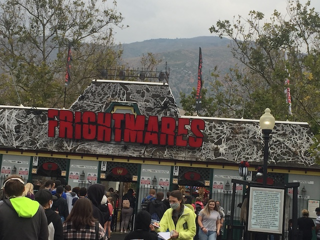
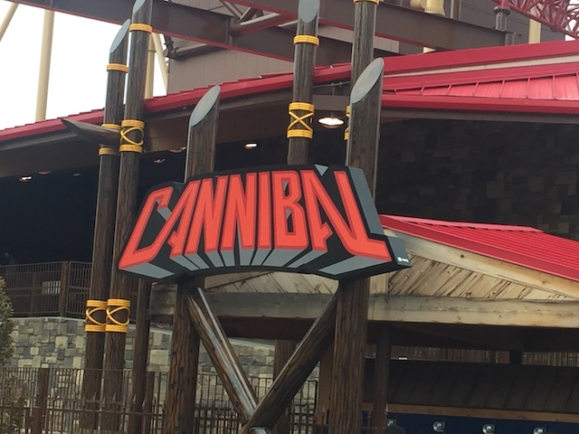
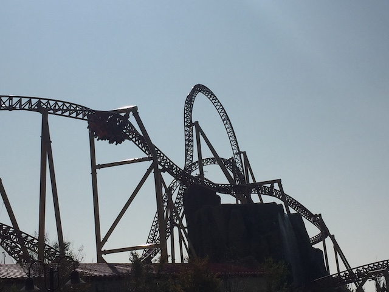
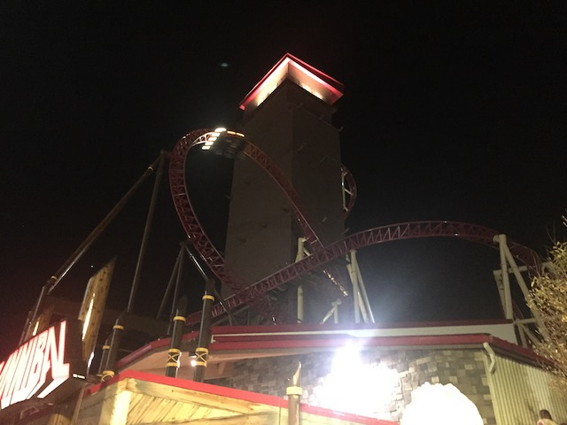
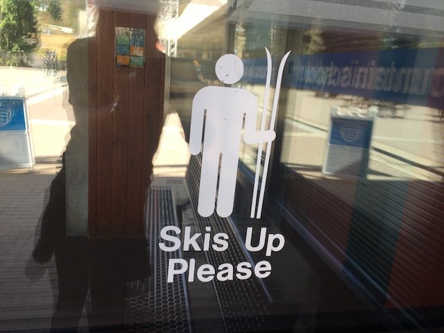
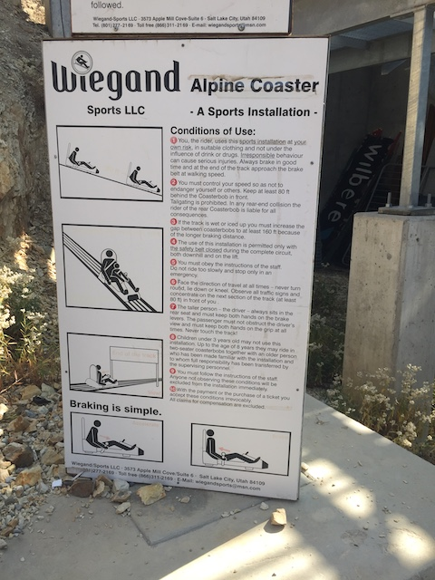
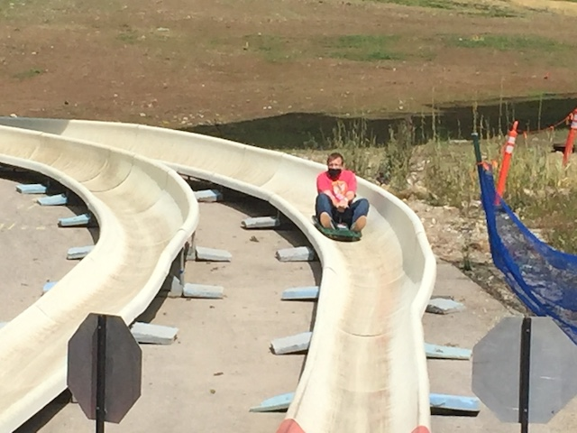

| |
Lagoon 2020
All right. So....it's been a while since our last update. Though you probably are not surprised as to why it's been so long that we've posted anything (If it wasn't for adding new Japan Park Reviews, this site would've been stagnant for the past few months). Yeah. COVID-19. Coronavirus became a pandemic that upended the entire world, including all the 2020 plans we had at Incrediblecoasters. But it's not just our big travels that got upended (and we were only planning on domestic travel this year to begin with!), but all the local plans got cancelled too! OK, eventually, most other states began to open up their theme parks with new restrictions in place since....we're in a f*cking global pandemic now. But not California (I'll save my rant on that for another day). All theme parks are still closed there. And....I'M GOING F*CKING BATSH*T CRAZY OVER HERE!!! HAVING WITHDRAWLS!!! GET ME OUT OF HERE!!! So when a couple friends mentioned wanting to head out to Lagoon to get their rollercoaster fix, I'M IN!!!! And so....we're off!
So Desperado hasn't really operated much. These last few years, the hours have been sporadic and random, making stopping to ride Desperado on a trip like this a real pain in the ass. However in February 2020, Buffalo Bills announced that the entire hotel is closed until further notice. And with the COVID recession killing so many small businesses, it really makes me skeptical of Buffalo Bills ever opening again. We already are worried about countless small parks closing due to the COVID recession (Amazingly enough, Indiana Beach pulled a Jesus, closing only to immedietly reopen under a new owner. Well, now that's a priority next time I'm in the Midwest), you have to think. Do you think any of the casinos in F*CKING PRIMM are gonna survive this recession? Barely anyone went there to begin with! Since....Primm is too far from Vegas for Vegas people to head over to gamble. Too close to Vegas to get faraway tourists who'd just go to Vegas to gamble instead. And the hours were already f*cked up. Throw in a pandemic grinding evertthing to a halt and throw a recession on top of that? Yeah. I think its a safe bet to say that Desperado is closed forever. ='(
I REALLY hope I'm wrong, but assuming I'm not, So long Desperado. You were a really fun hyper coaster and underrated. I'm happy I was able to ride it, and will missing stopping over at Buffalo Bills on Vegas trips.
Speaking of Las Vegas, we are NOT stopping there on this weekend trip.
Hey look! Much like New Mexico, Mesquite NV also has pretty overpasses. Never noticed that before.
Hmm. Never been to this chain before. New Fest Food Chain credit!
So Culvers is a chain that is primarily in the Midwest (and Wisconson in particular). And I have to admit. This place is really good. One of the better burger chains. I mean....they're butter burgers! Butter makes everything better! I'll have to make note to stop here on the next Midwest Trip.
YAY!!! WE FINALLY MADE IT TO LAGOON!!!

And yes, despite it being September, Frightmares is still going on. Hey, Halloween events in September can be fun. Plus, with Halloween essentially banned in California this year, this is all the Halloween I'm gonna get. Might as well soak it all in.
Love all the halloween decorations that Lagoon has set up.

OK. I haven't ridden a rollercoaster since Februrary. So let's just hop on this thing and FINALLY end the streak!
Yes. Please do such basic things like socially distance and wear a mask, so that we can keep parks open and NOT kill countless people due to a pandemic.
If even the lion statues can wear their masks, then so can you (Seriously, Anti-Maskers can go f*ck themselves).
 And hey. This is a great ride to finally end the everlasting COVID Coaster Drought.
And hey. This is a great ride to finally end the everlasting COVID Coaster Drought.
 Still one of the better coasters in the United States and a total kickass ride.
Still one of the better coasters in the United States and a total kickass ride.

That Lagoon Roll still gets you off guard. Love how it changes direction. =)
 Still one of the more agressive Wild Mouse coasters out there.
Still one of the more agressive Wild Mouse coasters out there.
Hey California! Look what we can do safely over here!?
 Enough of the Wild Mouse! Let's get back on the good rides!
Enough of the Wild Mouse! Let's get back on the good rides!
 It may be old, but this is still one of the star attractions at Lagoon.
It may be old, but this is still one of the star attractions at Lagoon.
 I know it may look simple, but those loops and those helixes provide some seriously strong Gs.
I know it may look simple, but those loops and those helixes provide some seriously strong Gs.
 Really hoping that Lagoon continues to give this ride tender love and care since....these Schwarzkophs are awesome and becoming rarer and rarer.
Really hoping that Lagoon continues to give this ride tender love and care since....these Schwarzkophs are awesome and becoming rarer and rarer.
 Excuse me, but I just can't seem to find the toilet. Where oh where could one be? Oh, and yeah. Weather wasn't on our side with the rain. But screw it!
Excuse me, but I just can't seem to find the toilet. Where oh where could one be? Oh, and yeah. Weather wasn't on our side with the rain. But screw it!
My coaster appetite still isn't quite quenched yet. Let's keep it up with Spider.
So I might as well go over Lagoon's COVID safety measures. It's primarily just the standard stuff. Social Distancing (Stand 6 ft away from one another) and wear a mask. No special cleaning or disenfecting all the coaster seats after each cycle. Just social distancing and masks. I will admit that I wish the masks were mandatory walking on the midway as well instead of just in lines, in haunt mazes, and in resteraunts. But at least 80% of Lagoon visitors were wearing their mask on the midway anyway. Still felt safe and that I wasn't gonna get COVID, but I do think it should be mandatory on the midway too.
So fun fact. On Spider, we E-Stopped and the ride broke down (Kicking myself in the balls for not snapping a photo while we were stopped). I was thinking we might actually get an evacuation. But nope. We finished our ride.
The ride itself was pretty weak since....E-Stopping makes the rest of the ride much slower and tamer. But it was still a cool experience.
How the hell is the poop emoji so popular? =/
 Let's keep going and hop on Roller Coaster.
Let's keep going and hop on Roller Coaster.
Not the craziest ride ever, but still a decent wooden coaster with some airtime.
Still a much longer dark ride than you would expect first going into it.
So since my last visit, they seemed to give Terror Ride a makeover. So...let's see what sort of changes they made.
It was a definate improvement. Sure, it's a mild bummer that some of the dumber cornier lines are gone, but you can't deny that this is a better ride now.
Oh god. Looks like the new Terror Ride is scarier than I initially thought.
Lagoon has a Beer Garden!? I think I know what we're doing for lunch.
So yeah. Lagoon's big new addition for 2019 was a beer garden. Not a big new thing, but hey. It looks absolutely great!
And it actually has some great beer and schnitzel! OK, not as good as the real stuff in Germany. But this is still really good! Easily the best meal I've had at Lagoon. Big thumbs up for finally having something that stands out in the dining department.
So one thing you may notice about all the tombstones they have for Frightmares is that they have a nice morbid sense of humor. And....I like that.
Tilt-A-Whirls may not be anything special, but hey. Better than nothing. We still had fun on it.
 Sad to report that Jet Star II is closed for 2020 since its impossible to practice social distancing with the ride open. Aww. Stupid pandemic. =(
Sad to report that Jet Star II is closed for 2020 since its impossible to practice social distancing with the ride open. Aww. Stupid pandemic. =(
 Still the best bumper cars I've done.
Still the best bumper cars I've done.
Wait a minute. This is in the wrong spot.
Yep. For some reason, they actually moved their enterprise over to this part of the park. Still one of the better enterprises.
Fun fact. Lagoon was initially in my 2020 plans since the original plan was to go since....Primordial (the coaster seen under construction) was originally supposed to open in 2020. However, construction took longer than expected (not related to COVID). So we cancelled our Lagoon plans and made the plan to return when the ride opened back up. However, then all plans got cancelled because of the pandemic, and all of California shut down. And because Lagoon is the nearest open theme park, we drove out here, and wound up going to Lagoon after all.
For some reason, I don't trust Sushi in Utah. Though in a major city like Salt Lake City, it's probably fine.
For those of you tired of paying an arm and a leg for theme park food, here you go.
 Still without a doubt, the best Top Scan and a crazy flat ride.
Still without a doubt, the best Top Scan and a crazy flat ride.
Normally I choose Space Shot since I can just do a turbo drop with Supreme Scream @ Knotts. But...*sigh* That's still closed. Still did Space Shot since that has the shorter line though.
Come on Lagoon. Make these flyers easy to snap. It's always better that way.
The only thing that stops a bad guy with a chainsaw is a good guy with a chainsaw.
For some reason, the Lagoon Skyride always manages to be a really relaxing ride.
Man, Lagoon has really let all the plants grow tall. Tall enough to kick from the skyride.
 Watch out for that low clearance!
Watch out for that low clearance!
Gee. Got enough pumpkins you guys?
And in typical Lagoon prediction, the river (does that river even have a name? Can't find it on Google Maps) is all dried up since its mid-September.
Rattlesnake Rapids may not have any special effects or drops or anything crazy. But it will get you soaked, has a great setting, and is still one of our favorite water rides.
Yes Anti-Maskers. We will opress you even during Haunt Mazes *evil laugh* (End Angry Sarcasm Mode)
 And for you kids (or pussies), they also have a Kids Haunt over in Pioneer Village. It's really not much aside from a maze in the middle of the path.
And for you kids (or pussies), they also have a Kids Haunt over in Pioneer Village. It's really not much aside from a maze in the middle of the path.
Yes. We all know. The 1800s was a very special time. No need to make a whole Halloween themed area to remind us. ;)
Of course, it's not a real visit to Lagoon without spending some time in Pioneer Village (I know a certain someone is loving exploring Pioneer Village).
Please tell me these jackasses don't wanna go horseback riding.
This is a phone? How do I text on this thing? And why am I unable to connect to the internet? Stupid peice of sh*t doesn't even have Wi-Fi access.
Just another reminder that peacocks also love Lagoon and like to make it their home.
Everything is always better with ice cream.
Damn it! I forgot about the Swig Sodas from last time. Really regret not getting one of those this time since they're really good.
CREDIT WHORES!!! ALL OF YOU!!!
No, I'm not above credit whoring. I just already had that credit from my first Lagoon visit.
 Hey, if you're gonna go credit whoring, might as well stop and check out Bombora. That ride is actually fun by kiddy coaster standards.
Hey, if you're gonna go credit whoring, might as well stop and check out Bombora. That ride is actually fun by kiddy coaster standards.
What sort of monsters are lurking behind all that fog?
 Holy Crap! They stole the bathroom sign from Legoland! I thought that was just a Legoland thing!
Holy Crap! They stole the bathroom sign from Legoland! I thought that was just a Legoland thing!
Random flat ride that Jason wanted to ride while others were in the bathroom. And this was one of the few Lagoon rides I hadn't done before. Well....I quickly learned that this ride actually gets you wet. NOT AMUSED!!! >=(
Oh man. It's been a while since I've done this ride. But....people need their credit.
 What's that Jason? You found Bat rough? Yep. Welcome to the world of headbanging and understanding why coaster enthusiasts bitch about old school Vekoma rides *evil laugh*
What's that Jason? You found Bat rough? Yep. Welcome to the world of headbanging and understanding why coaster enthusiasts bitch about old school Vekoma rides *evil laugh*
All right. Night as fallen. Now let's get Frightmares going! *evil laugh*
All right. So it turns out that Lagoon was busier today than initially expected, and we have less time than initially expected. So we got the Time Warp Fastpasses. And....totally worth every penny.
First maze we're reviewing, Malevolent Mansion. This was....an OK Haunt Maze. Nothing special, but fun. About on par with the mazes at Fright Fest.
Easily the best Frightmares Maze would be Frightening Fiasco. I know there's no good sign for it, but this maze surprisingly had some decent effects, and actually caught me off guard at one point. Big thumbs up to this maze. Good job Lagoon.
And on the opposite end of the spectrum, we have the Fun House of Fear. This thing is NOT scary. AT ALL!!! It's like Lagoon found themselves with too many stuffed animal prizes, and lazily slapped them together and called them scary. Stuffed animals are NOT scary Lagoon. Thumbs down on this maze.
EXECUTE THE INFIDEL!!!
Here you go Jason. I know you really wanted to do the train ride tonight. And....this is a decent one.
Bah! That lion is NOT scary Lagoon! Work on the Halloween decorations! =P

Well, this is gonna be my last coaster for a while (*sigh* F*cking California), might as well make it something really great.
Oh wait. Lagoon is still open for 5 more minutes! Quick ride on Air Race!
If you're wondering why we've ignored Wicked all this time, well....sad to say, but Wicked was closed all day for technical difficulties. Bummer, though at least I've ridden Wicked many times before. But for all my friends who were visiting for the first time or hadn't visited since before Wicked was built, sucks for you. >=)
All right. We can't head back home yet. Gotta find something more we can do in Utah. But what?
Yep. We went and checked out Snowbird. That should be a fun way to spend a couple hours.

So Snowbird is primarily known as a major ski spot (as noted by the sign). However, there are a ton of summer activities, such as an Alpine Coaster, Alpine Slide, and other fun stuff for us to do there.
Nope. We did a lot here, but the Ropes Course? Not today.
Yeah. Snowbird really has some great beauty in the Utah Wilderness. Love it up here (Utah is still incredibly pretty and easily my favorite red state).
 Yeah. Don't be an idiot and approach wild animals, like Moose. No seriously! They're WAY more dangerous than you think.
Yeah. Don't be an idiot and approach wild animals, like Moose. No seriously! They're WAY more dangerous than you think.
So I did the Bungee Trampoline. It was something I hadn't done in forever, but man. This thing was a f*cking workout. Not sure if its just harder because of the altitude or if I'm just more out of shape. But this was surprisingly difficult. Not to mention, I nearly crashed into the operator (Sorry).
First things first, let's do their Alpine Coaster.
Part of me wants to start counting Alpine Coasters just so I can say that I got some new credit in 2020. But I'm not that desperate as to do that (Alpine Coasters don't count).

Crashing on the Alpine Coaster is bad, M'kay.
Sad to say, but this was my least favorite Alpine Coaster. It was fun, but way shorter than I was expecting.
 Well....at least this river is still flowing.
Well....at least this river is still flowing.
Head up the Skilift. There's still a lot more fun activities to do up there.
What the hell is Summer Tubing?
Summer Tubing is basically Snow Tubing, except on golf grass without the snow. It's....a fun experience. Don't really have much snow experience to compare it to, but this was still a lot of fun.
Bah. 50 ft drop!? Not scary at all! I can cliff jump this thing!
And of course, we have to check out their Alpine Slide first.
I don't have much Alpine Slide experience, with the only other one to compare it to is the Big Bear one. Though I will admit that this was the better one.

For the millionth time Jason, you can fall off the Alpine Slide. Be careful.
Getting another ride on the Alpine Coaster. Because seriously! That all day pass at Snowbird really paid for itself.
They're actually POV Friendly on this ride, which....I love that. Oh, and the photos are all vertical since...holding the phone properly is too risky on an alpine slide (You really shouldn't do POV Shots with a phone camera).
*Sigh* Time to head back to California. But hey. Let's check out Zaxbys for lunch. I know they're primarily on the East Coast, but they have one in Utah. So...let's see what they have.
This place was good! Really good! Definately up there with Raising Canes and Bojangles as far as fast food chicken chains go. Very underrated. =)
Oh look. We have a Cracker Barrel virgin with us. I know where we'll be going for dinner.
IT IS F*CKING SEPTEMBER!!!
Still has really good food. Gonna have to check out the one they just opened in Camarillo sometime soon.
Stopped at some gas station in Vegas, and....I think we found Herbie the Love Bug.
And that was our weekend Lagoon Trip. And let me tell you. I NEEDED this trip. After being stuck in quarantine for months, and having very little fun throughout 2020, this was something BADLY needed. REALLY hope California starts opening the parks soon, and we can have fun (You can open them safely). And of course, Lagoon is still a great park and continues to prove why its one of my favorite independent parks in America, on par with places like Holiday World and Knoebels. Looking foreward to coming back when Primordial opens up.
Home
|